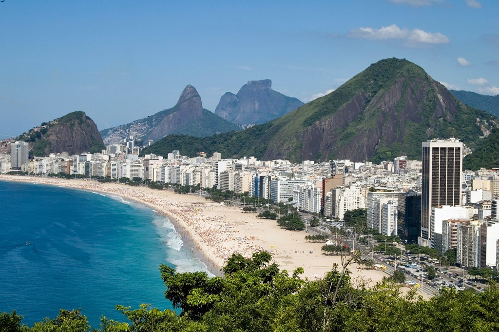

Народности
Бразилия — одна из самых многонациональных стран мира: на ее территории проживают представители более сотни народностей. Основную часть населения (около 50%) составляют так называемые «белые», или европейцы: португальцы, испанцы, итальянцы, поляки, немцы и проч.

Факты
Бразилия – пятая по величине страна в мире. Ее площадь составляет 8 514 877 км². Это 47,3% территории Южной Америки.
По территории Бразилии протекает самая полноводная и большая по площади бассейна река. Каждую секунду из Амазонки в Атлантический океан впадает около 209 кубометров воды. Последние 150 лет Бразилия — лидер по производству кофе. Ежегодно страна дарит миру 2,5 млн тонн кофе. Причем 80% из него составляет арабика.
Климат
На территории страны представлены три климатические зоны: экваториальная, тропическая и субтропическая. Самый жаркий район Бразилии - это северо-восток (экваториальный тип климата). ... Большая часть территории страны расположена в тропическом климате.